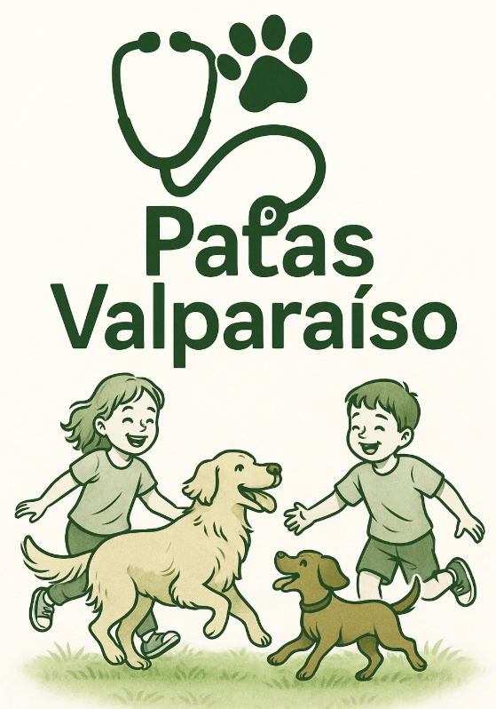

<!DOCTYPE html>
<html lang="pt-BR">
<head>
  <meta charset="UTF-8" />
  <meta name="viewport" content="width=device-width, initial-scale=1.0"/>
  <title>Patas Valparaíso</title>
  <link rel="stylesheet" href="style.css">
  <script src="https://cdn.jsdelivr.net/npm/chart.js"></script>
</head>
<body>
  <header class="header">
    
    
    
    <input type="text" id="search" placeholder="Busca..." />
  </header>
  <main class="container">
    <section id="cards"></section>
    <section class="charts">
      <canvas id="chartIdentificados"></canvas>
      <canvas id="chartCastrados"></canvas>
      <canvas id="chartVacinados"></canvas>
    </section>
  </main>
  <footer>
    <span>Criado por: Rennor Oliveira</span>
    
  </footer>
  <script src="script.js"></script>
</body>
</html>